The Problem
The home screen is the first thing every Switch 2 player sees and the hub they come back to between games. I led a three-person team through a human factors review of it. We defined target users, ran task-based usability tests to find pain points, and I designed Figma prototypes that address them.
This page shows the redesign that came out of those tests. It covers the annotated wireframe, the low- and high-fidelity interactive prototypes, and a six-option theme system that changes the whole home screen.
Four Changes to the Home Screen
Full cover art
Full portrait box art in a row that scrolls sideways, so games can be recognized at a glance.
Story progress
A 0–100% bar under each game. Games without a story mode show no bar.
Bottom navigation
System buttons move to a full-width bar along the bottom edge, using icon-only buttons.
Nintendo themes
Light, Dark, and four character backgrounds, chosen from a new Themes button.
Mapping the Theme Flow
The low-fidelity wireframe set the layout and walked through the main new task: opening the theme picker and applying a theme. Selecting Themes opens a picker over the home screen, and choosing a theme (Mario is shown) updates the background.
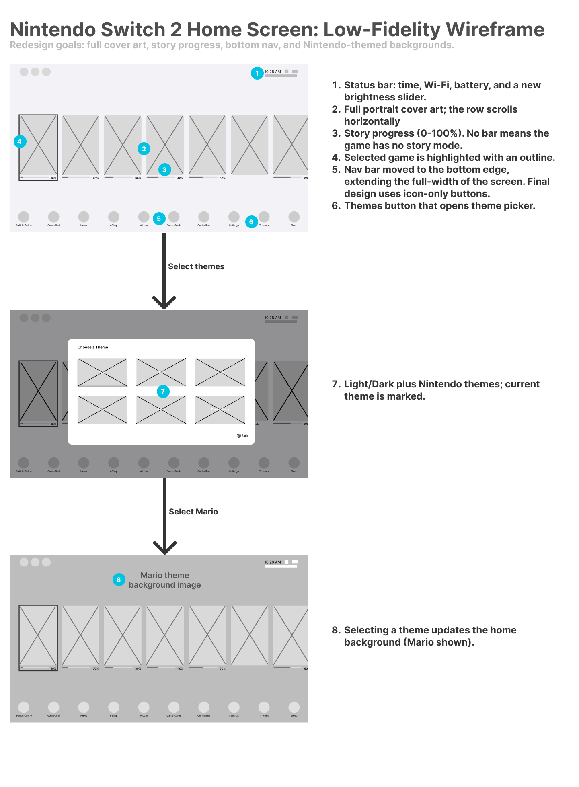
- Status bar with time, Wi-Fi, battery, and a new brightness slider
- Full portrait cover art in a row that scrolls sideways
- Story progress from 0 to 100%. No bar means the game has no story mode
- The selected game has an outline
- Nav bar moved to the bottom edge at full width, with icon-only buttons in the final design
- Themes button that opens the theme picker
- Light/Dark plus Nintendo themes, with the current theme marked
- Selecting a theme updates the home background (Mario shown)
From Gray Boxes to Real Screens
Each low-fidelity prototype screen maps directly to a high-fidelity Figma screen. Crossed-box placeholders labeled with each game's title became real cover art, gray progress bars became cyan, and labeled nav circles became recognizable icons. In the theme picker, crossed-box placeholders labeled with each theme name became thumbnail previews of each background.
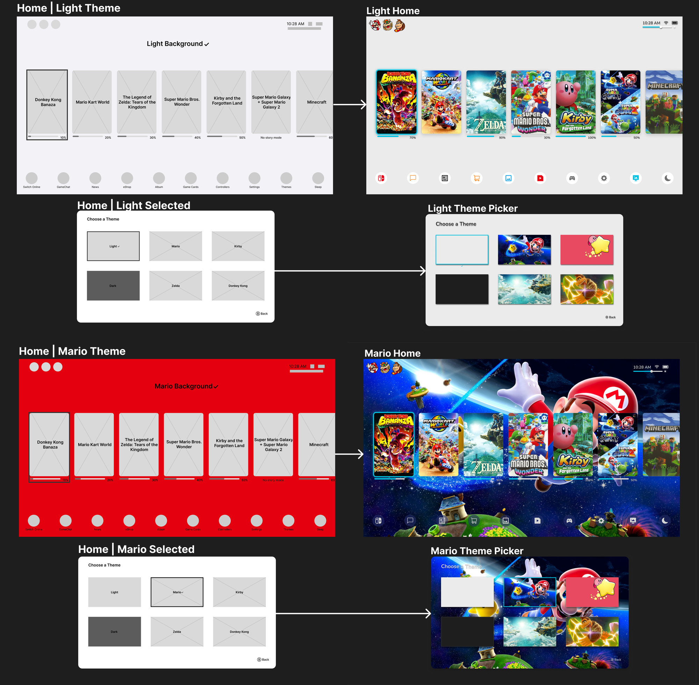
The Light and Mario themes, home screen and theme picker, shown as low-fidelity prototype screens (left) and high-fidelity prototype screens (right).
Six Themes, One Layout
The picker has two system themes and four Nintendo character themes. Each background was chosen to stay recognizable as a small thumbnail in the theme picker and to work behind the full home screen.
Background Themes
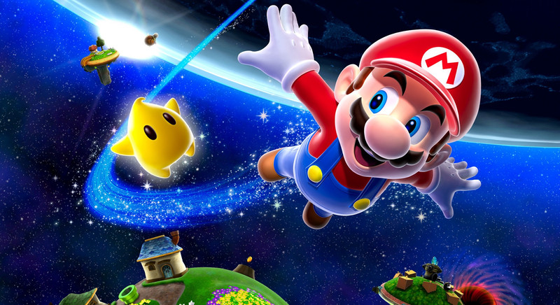
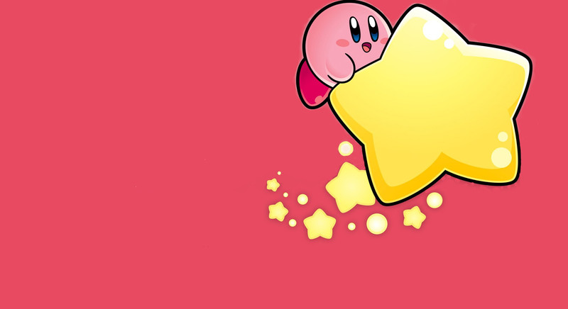
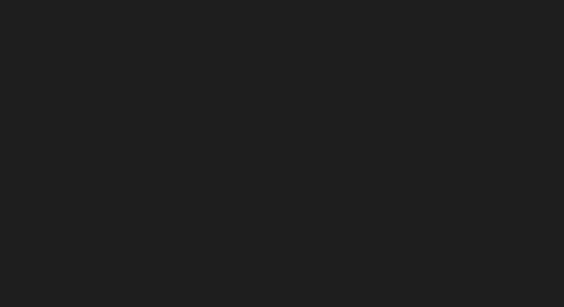
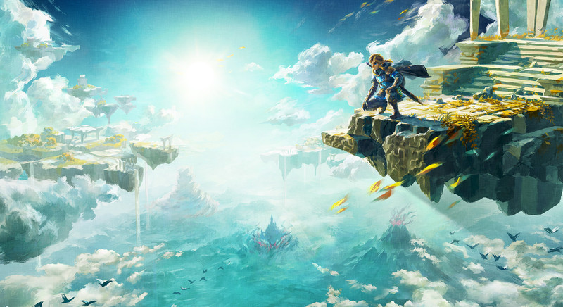
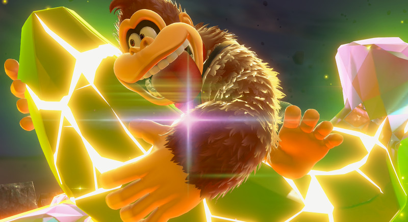
Themes Applied
Every theme keeps the same layout, focus outline, and progress bars. Only the background and the styling of the nav icons change. Pick a theme to see its home screen and theme picker.
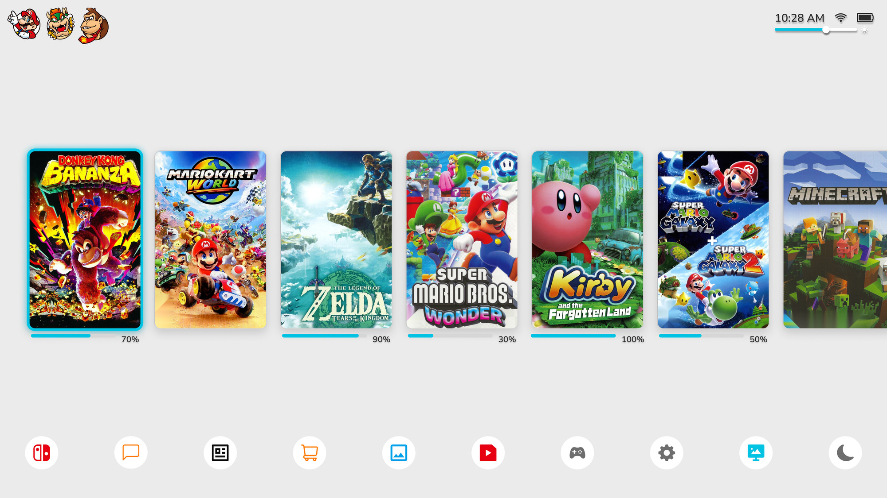
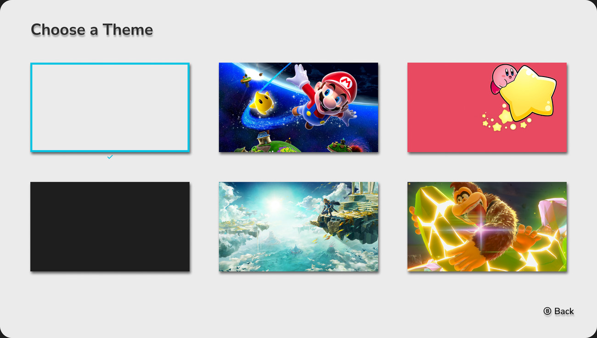
The default theme. Nav icons keep their colors on a neutral gray background.
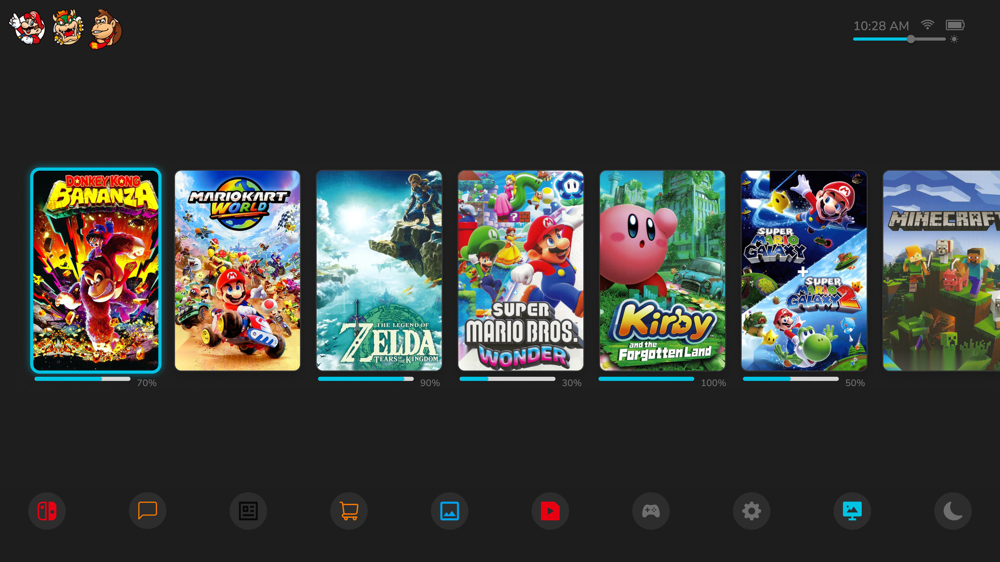
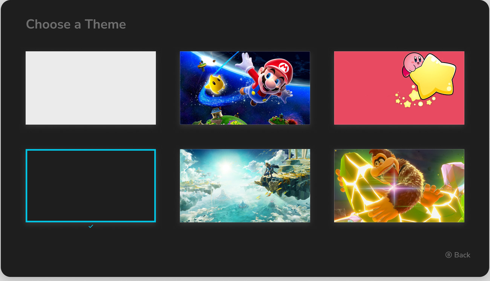
A dark version of the default with the same colored icons and cyan focus outline.
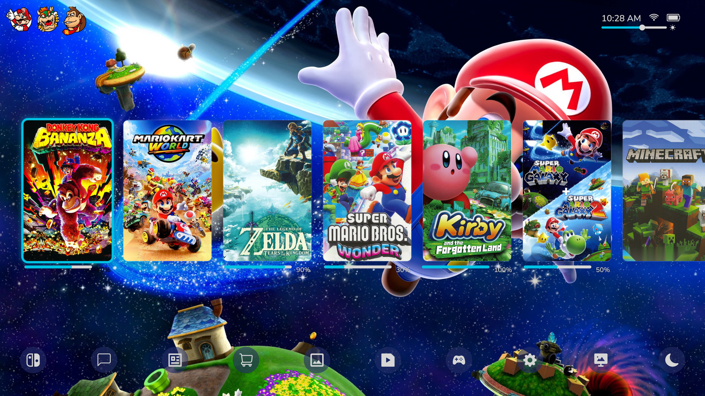
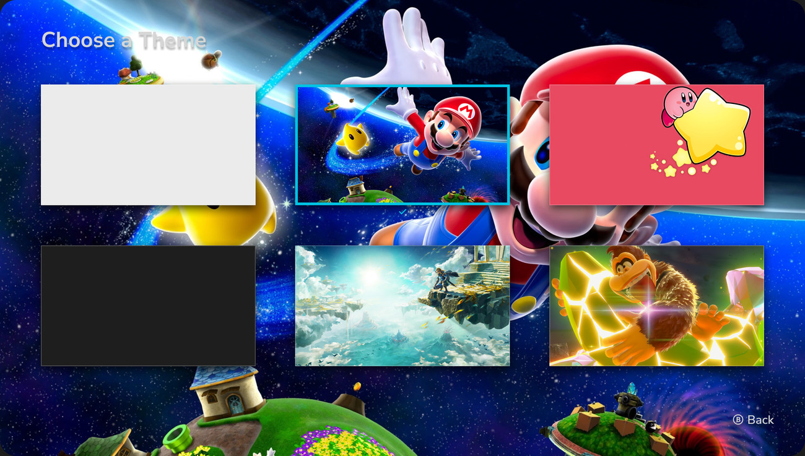
Super Mario Galaxy art. Nav icons switch to translucent circles so the background shows through.
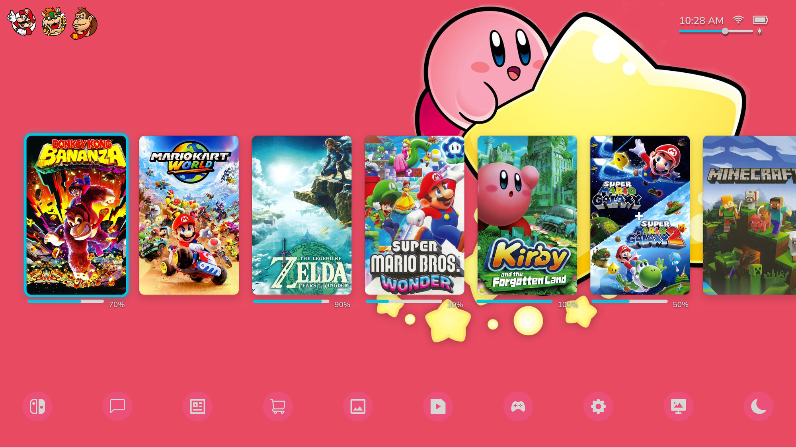
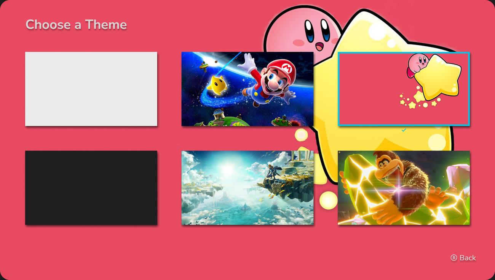
A flat pink background with Kirby art. Nav icons pick up the theme color.
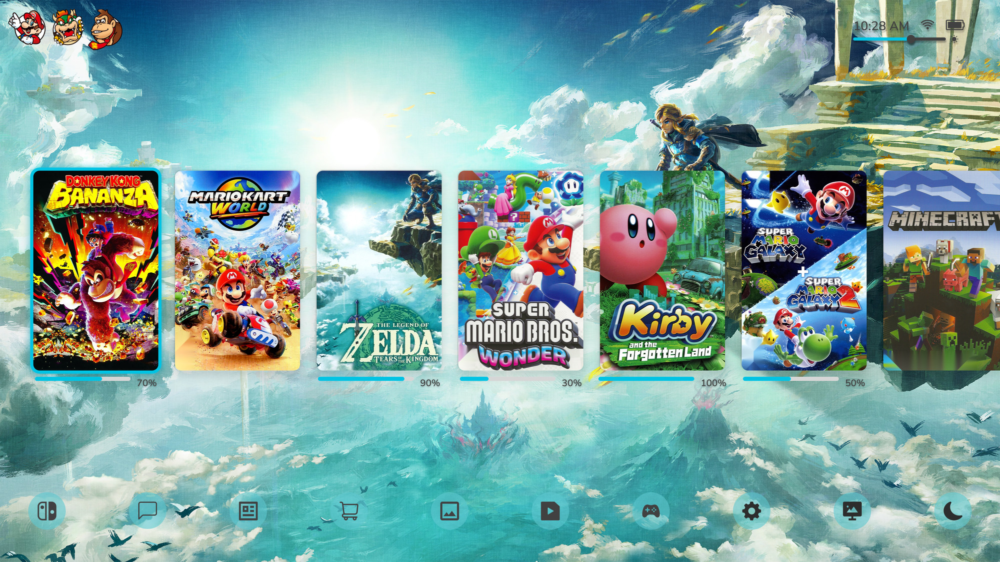
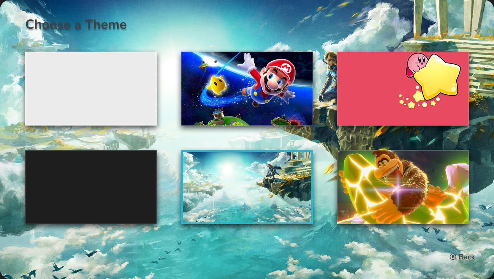
Tears of the Kingdom art with nav icons tinted to match the sky.
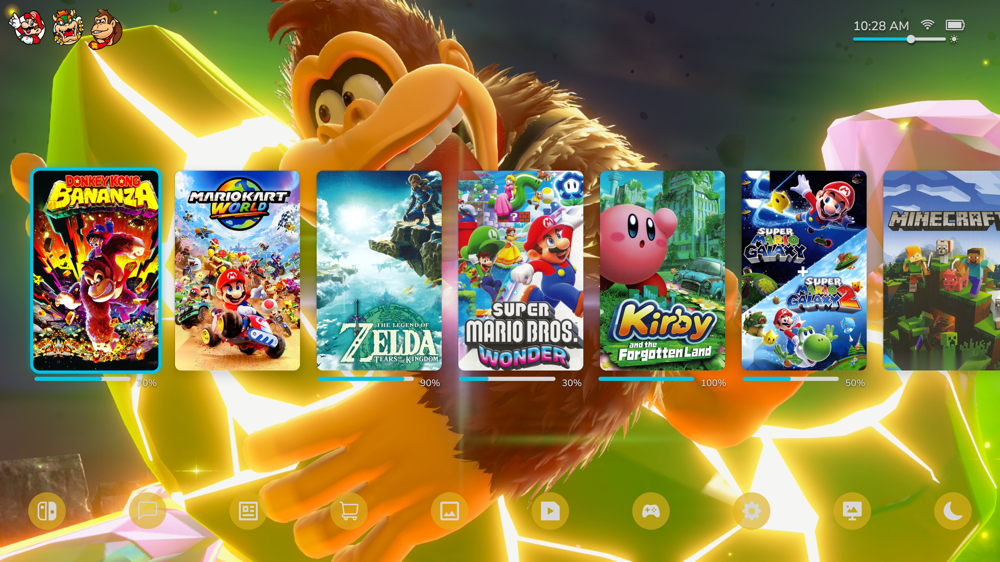
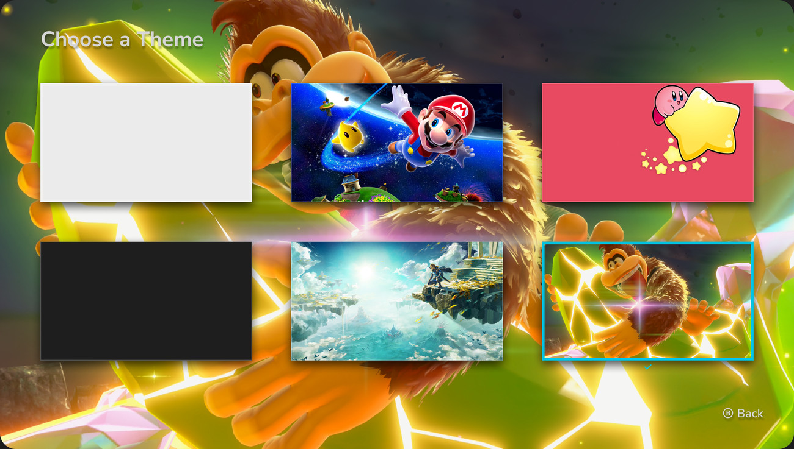
Donkey Kong Bananza art with warm, gold-tinted nav icons.
Click Through the Prototypes
Both Figma prototypes are embedded below. Click inside a frame to move through the flow, or open it in Figma for a full-screen view.
Low-Fidelity Prototype
Open lo-fi prototype in Figma ↗High-Fidelity Prototype
Open hi-fi prototype in Figma ↗Why It Looks This Way
| Element | Design decision | Human factors rationale |
|---|---|---|
| Cover art | Full portrait box art instead of small tiles | Recognition over recall: players find games by familiar artwork instead of reading titles. |
| Focus state | A glowing cyan outline on the selected game, the same in every theme | Visibility of system status: the controller's focus stays easy to spot against any background. |
| Story progress | A percentage bar under each game, left out for games with no story | Shows progress without opening the game. Having no bar is a meaningful signal of its own. |
| Bottom nav | A full-width bar of icon-only buttons along the bottom edge | A consistent, predictable spot for system functions that's separate from the game row. |
| Theme picker | Thumbnail previews. The current theme gets an outline and a checkmark, and the picker takes on the active theme's background | Players see what each theme looks like before choosing it, and the current choice is always clear. |
| Status bar | Brightness slider added next to time, Wi-Fi, and battery | Puts a frequent adjustment one step from home instead of buried in a menu. |
Usability Test Results
Usability testing is complete, and the team is compiling the results now. A full write-up of the pain points we found, and how each one maps to the redesign, will be added here soon.
Something to evaluate next: busy character art can compete with the content in front of it. Over the Mario and Donkey Kong backgrounds, the small progress labels and translucent nav icons have lower contrast. A future round of testing could check whether the themes need a scrim or stronger contrast behind text.
Sources
- megasnorlax. (n.d.). Donkey Kong Bananza [Cover image]. The Cover Project. https://www.thecoverproject.net/view.php?cover_id=30726
- SirRandall. (n.d.). Mario Kart World [Cover image]. The Cover Project. https://www.thecoverproject.net/view.php?cover_id=30716
- megasnorlax. (n.d.). The Legend of Zelda: Tears of the Kingdom [Cover image]. The Cover Project. https://www.thecoverproject.net/view.php?cover_id=24720
- megasnorlax. (n.d.). Super Mario Bros. Wonder [Cover image]. The Cover Project. https://www.thecoverproject.net/view.php?game_id=18500
- Nutsacc. (n.d.). Kirby and the Forgotten Land [Cover image]. The Cover Project. https://www.thecoverproject.net/view.php?game_id=15137
- Jerry88pl. (n.d.). Super Mario Galaxy + Super Mario Galaxy 2 [Cover image]. The Cover Project. https://www.thecoverproject.net/view.php?game_id=19903
- megasnorlax. (n.d.). Super Smash Bros. Ultimate [Cover image]. The Cover Project. https://www.thecoverproject.net/view.php?game_id=14841
- KirbyFan932. (n.d.). Super Mario Odyssey [Cover image]. The Cover Project. https://www.thecoverproject.net/view.php?game_id=9843
- lenoxseer. (n.d.). The Legend of Zelda: Link’s Awakening - Nintendo Switch [Cover image]. The Cover Project. https://www.thecoverproject.net/view.php?game_id=10120
- LoganGamer20. (n.d.). Super Mario 3D World + Bowser’s Fury [Cover image]. The Cover Project. https://www.thecoverproject.net/view.php?game_id=14884
- Nintendo. (n.d.). The Legend of Zelda: Ocarina of Time - Nintendo Switch 2 [Cover image]. GameStop. https://www.gamestop.com/video-games/nintendo-switch-2/products/the-legend-of-zelda-ocarina-of-time---nintendo-switch-2/20036066.html
- megasnorlax. (n.d.). Minecraft [Cover image]. The Cover Project. https://www.thecoverproject.net/view.php?game_id=14828
- Iggy. (2025, May 6). Nintendo Switch 2 to launch with two system themes [Image of light and dark home menu themes]. Nintendo Soup. https://nintendosoup.com/nintendo-switch-2-to-launch-with-two-system-themes/
- Nintendo of America. (n.d.). Nintendo Switch 2 system [Image of the console in handheld mode]. Nintendo. https://www.nintendo.com/us/store/products/nintendo-switch-2-system-123669/
- Dean, I. (2025, July 18). Donkey Kong Bananza review: Switch 2 finally has its must-play system seller [Image]. Creative Bloq. https://www.creativebloq.com/entertainment/gaming/donkey-kong-bananza-review-switch-2-finally-has-its-must-play-system-seller
- Kirby HD wallpaper: A starry adventure awaits [Wallpaper]. (n.d.). Wallpaper Abyss. https://wall.alphacoders.com/big.php?i=317170
- Super Mario World Wallpaper [Wallpaper]. (n.d.). GetWallpapers. https://getwallpapers.com/collection/super-mario-world-wallpaper
- Nintendo. (n.d.). The Legend of Zelda: Tears of the Kingdom [Key art]. https://zelda.com/assets/img/tears/keyArt_desktop.jpg
All game artwork, characters, and trademarks belong to their respective owners and are used here for non-commercial, educational portfolio purposes only.